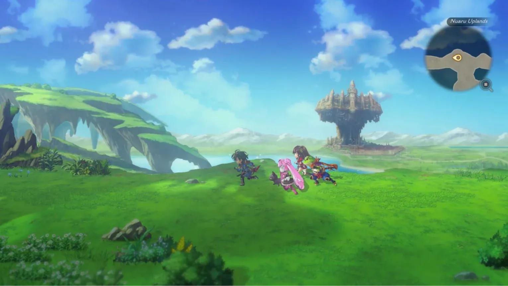

Luiso · 15 de septiembre de 2026
Durante años, muchos juegos móviles fueron diseñados alrededor de modelos de servicio permanente y sistemas gacha. Ahora, Wright Flyer Studios está intentando hacer exactamente lo contrario con Another Eden Begins.
El nuevo JRPG toma la primera parte de Another Eden: The Cat Beyond Time and Space, un juego que lleva funcionando desde 2017, y la reconstruye desde cero como un RPG premium de compra única, sin mecánicas gacha. Llegará el 17 de septiembre a PC, Nintendo Switch y Nintendo Switch 2, y actualmente cuenta con una demo disponible.
El productor Shinnosuke Hirasawa explicó que la transformación fue mucho más profunda que simplemente eliminar las cajas de botín.
Uno de los principales problemas que tuvo que resolver el equipo fue qué hacer con una mecánica que formaba parte del núcleo del juego original.
En lugar de buscar un sustituto para el gacha, Wright Flyer Studios decidió rediseñar completamente la forma en que los personajes se incorporan al grupo.
Cada compañero tendrá su propia historia de incorporación y los desarrolladores buscaron que el jugador conozca a los personajes durante la aventura, en lugar de obtenerlos mediante una tirada aleatoria. También se añadieron historias de afinidad y contenido completamente doblado.
La intención es que los personajes formen parte de la aventura y no se sientan como unidades coleccionables.
El equipo modificó prácticamente todo el sistema de progresión.
En el juego móvil existen herramientas que permiten acelerar considerablemente la evolución de los personajes, algo habitual en los títulos de servicio. Para Another Eden Begins, el estudio volvió a una estructura mucho más tradicional.
Derrotar enemigos, subir de nivel, conseguir dinero y comprar equipamiento vuelve a ser parte central del progreso.
El objetivo, según Hirasawa, era que quedara claro que Another Eden Begins no pretende comportarse como un juego móvil trasladado a consolas.
La transformación también busca recuperar a jugadores que se alejaron del Another Eden original precisamente por sus sistemas de monetización.
El productor reconoció que existe una audiencia internacional interesada en los JRPG que dejó de jugar al título original porque no se sentía cómoda con las mecánicas gacha.
Por eso, Another Eden Begins fue diseñado como una experiencia RPG completa sin loot boxes, con una progresión basada en los sistemas tradicionales del género.
Para los aficionados al JRPG clásico hay además un detalle especialmente atractivo.
El guion cuenta con Masato Kato, escritor de Chrono Trigger y Chrono Cross. El propio productor reconoce que el estilo narrativo de Kato tiene una presencia importante en Another Eden y en esta nueva versión.
La propuesta conserva además el sistema de combate por comandos y la estructura de viaje temporal que caracteriza a la franquicia.
Another Eden Begins llegará el 17 de septiembre a Steam, Nintendo Switch y Nintendo Switch 2.
Más que un simple remake, el proyecto representa un experimento bastante particular: tomar un RPG móvil que lleva casi una década funcionando como servicio y convertirlo en una aventura tradicional que pueda seguir existiendo incluso cuando el servicio original algún día deje de estar disponible.